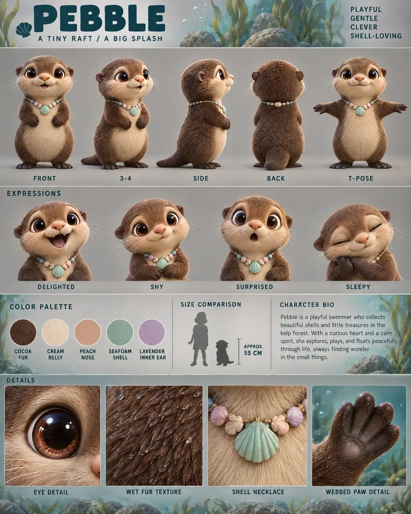

#92 of 100
Pebble
Sea otter
Ocean & ReefA TINY RAFTA BIG SPLASH
- Species
- Sea otter
- Collection
- Ocean & Reef
- Height
- 55 CM
- Personality
- PLAYFULGENTLECLEVERSHELL-LOVING
- Colour palette
- COCOA FURCREAM BELLYPEACH NOSESEAFOAM SHELLLAVENDER INNER EAR
- Expressions
- delighted open-mouth laugh
- shy closed-mouth smile
- surprised wide-eyed gasp
- peaceful sleepy expression
- Detail panels
- EYE DETAIL
- WET FUR TEXTURE
- SHELL NECKLACE
- WEBBED PAW DETAIL
- Character note
- Pebble — a playful swimmer who collects shells and floats peacefully through the kelp forest
Reference sheet prompt
Cute sea otter named PEBBLE, with enormous glossy chocolate-brown eyes, a round peach-colored nose, short whiskers, tiny rounded ears, dense cocoa-brown fur, a soft cream belly, and a pastel seashell necklace resting against its chest. A cheerful little kelp-forest collector high-end 3D animated feature character reference sheet, original character design, polished cinematic family-animation aesthetic, portrait 4:5 presentation board, structured editorial model-sheet layout, top-left header reading “PEBBLE” with the tagline “A TINY RAFT / A BIG SPLASH,” four personality traits in the top-right corner reading “PLAYFUL / GENTLE / CLEVER / SHELL-LOVING” full-body turnaround in the top section — exactly five evenly spaced views: front / 3-4 / side / back / T-pose, identical body shape and necklace placement in every view, consistent eye level, matching proportions, clear uppercase labels beneath each pose row of 4 bust-length facial expressions: delighted open-mouth laugh, shy closed-mouth smile, surprised wide-eyed gasp, peaceful sleepy expression, soft whisker movement and highly readable eyes color palette swatches with clean uppercase labels: COCOA FUR, CREAM BELLY, PEACH NOSE, SEAFOAM SHELL, LAVENDER INNER EAR neutral warm-grey studio background with restrained Pacific kelp-forest habitat cues: faint translucent kelp fronds, tiny bubble shapes, smooth underwater rock forms, and soft turquoise lighting accents limited to the bio panel and detail strip, clean grey negative space around every character view, thin section dividers, soft cinematic 3-point lighting middle information band containing the color swatches, a small otter silhouette beside a human height comparison, approximate height label “APPROX. 55 CM,” and a short readable character bio describing Pebble as a playful swimmer who collects shells and floats peacefully through the kelp forest bottom row of exactly 4 macro detail panels labeled EYE DETAIL, WET FUR TEXTURE, SHELL NECKLACE, WEBBED PAW DETAIL, showing the reflective brown eye, dense soft fur with subtle damp highlights, the pastel shell, and the tiny webbed paw 8k render, consistent chibi proportions, large pear-shaped torso, tiny rounded ears, short webbed paws, small flipper-like feet, smooth dense fur texture, clean legible typography, no extra animals, no duplicate limbs, no random text, no busy underwater scene, no logos